Pandas
Misc
- Examples of using numeric indexes to subset dfs
- indexes >> Syntax for using indexes
- select
- filtering >> .loc/.iloc
df.head(8)to see the first 8 rowsdf.info()is likestrin Rdf.describe()is likesummaryin Rinclude='all'to include string columns
Series
a vector with an index (ordered data object)
s = pd.Series([20, 21, 12], index=['London', 'New York', 'Helsinki']) >> s London 20 New York 21 Helsinki 12 dtype: int64Misc
- Two Pandas Series with the same elements in a different order are not the same object
- List vs Series: list can only use numeric indexes, while the Pandas Series also allows textual indexes.
Args
- data: Different data structures can be used, such as a list, a dictionary, or even a single value.
- index: A labeled index for the elements in the series can be defined.
- If not set, the elements will be numbered automatically, starting at zero.
- dtype: Sets the data types of the series
- Useful if all data in the series are of the same data type
- name: Series can be named.
- Useful if the Series is to be part of a DataFrame. Then the name is the corresponding column name in the DataFrame.
- copy: True or False; specifies whether the passed data should be saved as a copy or not
Subset:
series_1["A"]orseries_1[0]Find the index of a value:
list(series_1).index(<value>)Change value of an index:
series_1["A"] = 1(1 is now the value for index, A)Add a value to a series:
series_1["D"] = "fourth_element"(D is the next index in the sequence)Filter by condition(s):
series_1[series_1 > 4]orseries_1[series_1 > 4][series_1 != 8]dict to Series:
pd.Series(dict_1)Series to df:
pd.DataFrame([series_1, series_2, series_3])- Series objects should either all have the same index or no index. Otherwise, a separate column will be created for each different index, for which the other rows have no value
Categoricals
Misc - Also see - Conversions for converting between types - Optimizations >> Memory Optimizations >> Variable Type
Categorical (docs)
python version of factors in R
- R’s levels are always of type string, while categories in pandas can be of any dtype.
- R allows for missing values to be included in its levels (pandas’ categories). pandas does not allow NaN categories, but missing values can still be in the values.
- See
cat.codesbelow
- See
Create a categorical series:
s = pd.Series(["a", "b", "c", "a"], dtype="category")Create df of categoricals
df = pd.DataFrame({"A": list("abca"), "B": list("bccd"){style='color: #990000'}[}]{style='color: #990000'}, dtype="category") df["A"] 0 a 1 b 2 c 3 a
Specify categories and add to dataframe (also see Set Categories below)
raw_cat = pd.Categorical( ["a", "b", "c", "a"], categories=["b", "c", "d"], ordered=False ) df["B"] = raw_cat df A B 0 a NaN 1 b b 2 c c 3 a NaN- Note that categories not in the specification get NaNs
See categories, check if ordered:
cat.categories,cat.ordereds.cat.categories Out[61]: Index(['c', 'b', 'a'], dtype='object') s.cat.ordered Out[62]: FalseSet categories for a categorical:
s = s.cat.set_categories(["one", "two", "three", "four"])Rename categories w/
cat.rename_categories# with a list of new categories new_categories = ["Group %s" % g for g in s.cat.categories] s = s.cat.rename_categories(new_categories) # with a dict s = s.cat.rename_categories({1: "x", 2: "y", 3: "z"}) s 0 Group a 1 Group b 2 Group c 3 Group aAdd a category (doesn’t have to be a string, e.g. 4):
s = s.cat.add_categories([4])Remove categories
s = s.cat.remove_categories([4]) s.cat.remove_unused_categories()Ordered
Create ordered categoricals
from pandas.api.types import CategoricalDtype s = pd.Series(["a", "b", "c", "a"]) cat_type = CategoricalDtype(categories=["b", "c", "d"], ordered=True) s_cat = s.astype(cat_type) s_cat 0 NaN 1 b 2 c 3 NaN dtype: category Categories (3, object): ['b' < 'c' < 'd'] # alt s = pd.Series(["a", "b", "c", "a"]).astype(CategoricalDtype(ordered=True))Reorder:
cat.reorder_categoriess = pd.Series([1, 2, 3, 1], dtype="category") s = s.cat.reorder_categories([2, 3, 1], ordered=True) s 0 1 1 2 2 3 3 1 dtype: category Categories (3, int64): [2 < 3 < 1]
Category codes:
.cat.codess = pd.Series(["a", "b", np.nan, "a"], dtype="category") s 0 a 1 b 2 NaN 3 a dtype: category Categories (2, object): ['a', 'b'] s.cat.codes 0 0 1 1 2 -1 3 0 dtype: int8
Operations
Read
Misc
- For large datasets, better to use data.table::fread (see Python, Misc >> Misc)
CSV
df = pd.read_csv('wb_data.csv', header=0)- “usecols=[‘col1’, ‘col8’]” for only reading certain columns
Read and process data in chunks
for chunk in pd.read_csv("dummy_dataset.csv", chunksize=50000): print(type(chunk)) # process data <class 'pandas.core.frame.DataFrame'> <class 'pandas.core.frame.DataFrame'>- Issue: Cannot perform operations that need the entire DataFrame. For instance, say you want to perform a
groupby()operation on a column. Here, it is possible that rows corresponding to a group may lie in different chunks.
- Issue: Cannot perform operations that need the entire DataFrame. For instance, say you want to perform a
Write
- CSV:
df.to_csv("file.csv", sep = "|", index = False)- “sep” - column delimiter (assume comma is default)
- “index=False” - instructs Pandas to NOT write the index of the DataFrame in the CSV file
Create/Copy
- Dataframes
Syntaxes
df = pd.DataFrame({ "first_name": ["John","jane","emily","Matt","Alex"], "last_name": ["Doe","doe","uth","Dan","mir"], "group": ["A-12","B-15","A-18","A-12","C-15"], "salary": ["$75000","$72000","£45000","$77000","£58,000"] }) df = pd.DataFrame( [ (1, 'A', 10.5, True), (2, 'B', 10.0, False), (3, 'A', 19.2, False) ], columns=['colA', 'colB', 'colC', 'colD'] ) data = pd.DataFrame([["A", 1], ["A", 2], ["B", 1], ["C", 4], ["A", 10], ["B", 7]], columns = ["col1", "col2"]) df = pd.DataFrame([('bird', 389.0), ('bird', 24.0), ('mammal', 80.5), ('mammal', np.nan)], index=['falcon', 'parrot', 'lion', 'monkey'], columns=('class', 'max_speed')) df class max_speed falcon bird 389.0 parrot bird 24.0 lion mammal 80.5 monkey mammal NaNCreate a copy of a df:
df2 = df1.copy()
Indexes
Misc
- Row labels
- DataFrame indexes do NOT have to be unique
- The time it takes to search a dataframe is shorter with unique index
- By default, the index is a numeric row index
Set
df = df.set_index('col1') df.set_index(column, inplace=True)- previous index is discarded
- inplace=True says modify orginal df
Change indexes but keep previous index
df.reset_index() # converts index to a column, index now the default numeric df = df.set_index('col2')reset_index- inplace=True says modify orginal df (default = False)
- drop=True discards old index
Change to new indices or expand indices:
df.reindexSee indexes:
df.index.namesSort:
df.sort_index(ascending=False)Syntax for using indexes
- Misc
- “:” is not mandatory as a placeholder for the column position
.locdf.loc[one_row_label] # Seriesdf.loc[list_of_row_labels] # DataFramedf.loc[:, one_column_label] # Seriesdf.loc[:, list_of_column_labels] # DataFramedf.loc[first_row:last_row]
.ilocdf.iloc[one_row_position, :] # Seriesdf.iloc[list_of_row_positions, :] # DataFrame
- Misc
Example:
df.iloc[0:3]ordf.iloc[:3]- outputs rows 0, 1, 2 (end point NOT included)
Example:
df.iloc[75:]- (e.g. 78 rows) outputs rows 75, 76, 77 (end point, i.e., last row, NOT included)
Example:
df.loc['The Fool' : 'The High Priestess']- outputs all rows from “The Fool” to “The High Priestess” (end point included)
Example: Filtering cells
df.loc[ ['King of Wands', 'The Fool', 'The Devil'], ['image', 'upright keywords'] ]- index values: ‘King of Wands’, etc.
- column names: ‘image’, etc.
Multi-indexes
Use list of variables to create multi-index:
df.set_index(['family', 'vowel_inventories'], inplace=True)
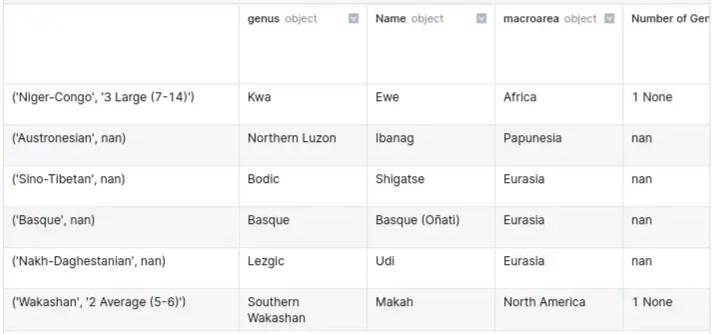- “family” is the 0th index; “vowel_inventories” is the 1st index
See individual index values:
df.index.get_level_values(0)- Gets the 0th index values (e.g. “family”)
Sort by specific level:
df.sort_index(level=1)- Not specifying a level means df will be sorted first by level 0, then level 1, etc.
Replace index values:
df.rename(index={"Arawakan" : "Maipurean", "old_value" : "new_value"})- Replaces instances in all levels of the multi-index
- For only a specific level, use “levels=‘level_name’”
Subsetting via multi-index
- Basic
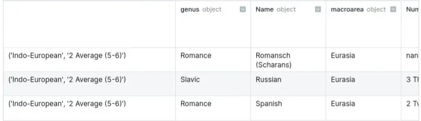
row_label = ('Indo-European', '2 Average (5-6)') df.loc[row_label, :].tail(3)- Basic
Note: Using “:” or specifying columns may be necessary using a multi-index
With multiple multi-index values
row_labels = [ ('Arawakan', '2 Average (5-6)'), ('Uralic', '2 Average (5-6)'), ] row_labels = (['Arawakan', 'Uralic'], '2 Average (5-6)') # alternate method df.loc[row_labels, :]With only 1 level of the multi-index
row_labels = pd.IndexSlice[:, '1 Small (2-4)'] df.loc[row_labels, :] # drops other level of the multi-index df.loc['1 Small (2-4)'] # more verbose df.xs('1 Small (2-4)', level = 'vowel_inventories', drop_level=False)- Ignores level 0 of the multi-index and filters only by level 1
- Could also use an alias, e.g.
idx = pd.IndexSliceif writing the whole thing gets annoying
Select
Also see Indexes
Select by name:
df[["name","note"]] df.filter(["Type", "Price"]) dat.loc[:, ["f1", "f2", "f3"]] target_columns = df.columns.str.contains('\+') # boolean array: Trues, Falses X = df.iloc[:, ~target_columns] Y = df.iloc[:, target_columns]- “:” is a place holder in this case
Subset
ts_df t-3 t-2 t-1 t-0 10 10.0 11.0 12.0 13.0 11 11.0 12.0 13.0 14.0 12 12.0 13.0 14.0 15.0All but last column
ts_df.iloc[:, :-1] t-3 t-2 t-1 10 10.0 11.0 12.0 11 11.0 12.0 13.0 12 12.0 13.0 14.0- For
[:, :-2], the last 2 columns would not be included
- For
All but first column
ts_df.iloc[:, 1:] t-2 t-1 t-0 10 11.0 12.0 13.0 11 12.0 13.0 14.0 12 13.0 14.0 15.0- i.e. the 0th indexed column is not included
- For
[:, 2:], the 0th and 1st indexed column would not be included
All columns between the 2nd col and 4th col
ts_df.iloc[:, 1:4] t-2 t-1 t-0 10 11.0 12.0 13.0 11 12.0 13.0 14.0 12 13.0 14.0 15.0- left endpoint (1st index) is included but the right endpoint (4th index) is not
- i.e. the 1st, 2nd, and 3rd indexed columns are included
All columns except the first 2 cols and the last col
ts_df.iloc[:, 2:-1] t-1 10 12.0 11 13.0 12 14.0- i.e. 0th and 1st indexed columns not included and “-1” says don’t include the last column
Rename columns
df.rename({'variable': 'Year', 'value': 'GDP'}, axis=1, inplace=True)- "variable" is renamed to "Year" and "value" is renamed to "GDP"Delete columns
df.drop(columns = ["col1"])
Filtering
Also see Indexes
On value:
df_filtered = data[data.col1 == "A"]Via query:
df_filtered = data.query("col1 == 'A'")On multiple values:
df_filtered = data[(data.col1 == "A") | (data.col1 == "B")]By pattern:
df[df.profession.str.contains("engineer")]- Only rows of profession variable with values containing “engineer”
- Also available
str.startswith:df_filtered = data[data.col1.str.startswith("Jo")]str.endswith:df_filtered = data[data.col1.str.endswith("n")]
- If column has NAs or NaNs, specify arg, “nan=False” to ignore them, else you’ll get a valueError
- Methods are case-sensitive unless you specify, “case=False:”
By negated pattern:
df[~df.profession.str.contains("engineer")]By character type:
df_filtered = data[data.col1.str.isnumeric()]- Also available
- upper-case: isupper()
- lower-case: islower()
- alphabetic: isalpha()
- digits: isdigit()
- decimal: isdecimal()
- whitespace: isspace()
- titlecase: istitle()
- alphanumeric: isalnum()
- Also available
By month of a datetime variable:
df[df.date_of_birth.dt.month==11]- datetime variable has yy-mm-dd format;
dt.monthaccessor used to filter rows of “date_of_birth” variable wit
- datetime variable has yy-mm-dd format;
Conditional:
df[df.note > 90]- By string length:
df_filtered = data[data.col1.str.len() > 4]
- By string length:
Multi-conditional
df[(df.date_of_birth.dt.year > 2000) & (df.profession.str.contains("engineer"))] df.query("Distance < 2 & Rooms > 2")%in%:
df[df.group.isin(["A","C"])]Smallest 2 values of note column:
df.nsmallest(2, "note")nlargestalso available
Only rows in a column with NA values:
df[df.profession.isna()]Only rows in a column that aren’t NA:
df[df.profession.notna()]Find rows by index value:
df.loc['Tony']locis for the value,ilocis for position (numerical or logical)- See Select columns Example for iloc logical case
With groupby
data_grp = data.groupby("Company Name") data_grp.get_group("Amazon")
Return 1st 3 rows (and 2 columns):
df.loc[:3, ["name","note"]]Return 1st 3 rows and 3rd column:
df.iloc[:3, 2]- h 11th month
Using index to filter single cell or groups of cells
df.loc[ ['King of Wands', 'The Fool', 'The Devil'], ['image', 'upright keywords'] ]- index values: ‘King of Wands’, etc. (aka row names)
- column names: ‘image’, etc.
Mutate
Looks like all these functions do the same damn thing
assigne.g. Add columnsdf["col3"] = df["col1"] + df["col2"] df = df.assign(col3 = df["col1"] + df["col2"])applya function to column(s)df[['colA', 'colB']] = df[['colA', 'colB']].apply(np.sqrt) df["col3"] = df.apply(my_func, axis=1)- docs: Series, DataFrame
- axis - arg for applying a function across rowwise or columnwise (default is 0, which is for columnwise)
- The fact that mutated columns are assigned to the columns of the df are what keeps it from being like summarize
- If np.sum were the function, then the output would be two numbers and this probably wouldn’t work.
mapdf['colE'] = df['colE'].map({'Hello': 'Good Bye', 'Hey': 'Bye'})- Each case of “Hello” is changed to “Good By”, etc.
- If you give it a dict, it acts like a case_when or plyr::mapvalues or maybe recode
- Values in the column but aren’t included in the dict get NaNs
- This also can take a lambda function
- Docs (only applies to Series, so I guess that means only 1 column at a time(?))
applymapdf[['colA', 'colD']] = df[['colA', 'colD']].applymap(lambda x: x**2)- Docs
- Says it applies a function elementwise, so its probably performing a loop
- Therefore better to avoid if a vectorized version of the function is available
Pivot
pivot_longer
Example
year_list=list(df.iloc[:, 4:].columns) df = pd.melt(df, id_vars=['Country Name','Series Name','Series Code','Country Code'], value_vars=year_list)- year_list has the variable names of the columns you want to merge into 1 column
pivot_wider
Example
# Step 1: add a count column to able to summarize when grouping long_df['count'] = 1 # Step 2: group by date and type and sum grouped_long_df = long_df.groupby(['date', 'type']).sum().reset_index() # Step 3: build wide format from long format wide_df = grouped_long_df.pivot(index='date', columns='type', values='count').reset_index()- “long_df” has two columns: type and date
Bind_Rows
df1 = pd.DataFrame({'strata': 1, 'y': np.random.normal(loc=10, scale=1, size=size){style='color: #990000'}[}]{style='color: #990000'})
df2 = pd.DataFrame({'strata': 2, 'y': np.random.normal(loc=15, scale=2, size=size){style='color: #990000'}[}]{style='color: #990000'})
df3 = pd.DataFrame({'strata': 3, 'y': np.random.normal(loc=20, scale=3, size=size){style='color: #990000'}[}]{style='color: #990000'})
df4 = pd.DataFrame({'strata': 4, 'y': np.random.normal(loc=25, scale=4, size=size){style='color: #990000'}[}]{style='color: #990000'})
df = pd.concat([df1, df2, df3, df4])
df_ls = [df1, df2, df3, df4]
df_all = pd.concat([df_ls[i] for i in range(8)], axis=0)- 2 variables are created, “strata” and “y”, then merged into a df
- Make sure no rows are duplicates
df_loans = pd.concat([df, df_pdf], verify_integrity=True)Bind_Cols
pd.concat([top_df, more_df], axis=1)Count
value.counts:
df["col_name"].value_counts()- output arranged in descending order of frequencies
- faster than groupby + size
- args
- normalize=False
- dropna=True
groupby + count
df.groupby("Product_Category").size() df.groupby("Product_Category").count()- “size” includes null values
- “count” doesn’t include null values
- arranged by the index column
Arrange
df.sort_values(by = "col_name")- args
- ascending=True
- ignore_index=False (True will reset the index)
- args
Group_By
Find number of groups
df_group = df.groupby("Product_Category") df_group.ngroupsgroupby + count
df.groupby("Product_Category").size() df.groupby("Product_Category").count()- “size” includes null values
- “count” doesn’t include null values
Only groupby observed categories
df.groupby("col1", observed=True)["col2"].sum() col1 A 49 B 43 Name: col2, dtype: int64- col1 is a category type and has 3 levels specified (A, B, C) but the column only has As and Bs
- observed=False (default) would include C and a count of 0.
Count NAs
df["col1"] = df["col1"].astype("string") df.groupby("col1", dropna=False)["col2"].sum() # output col1 A 49.0 B 43.0 <NA> 30.0 Name: col2, dtype: float64- ** Will not work with categorical types **
- So categorical variables, you must convert to strings to be able to group and count NAs
- ** Will not work with categorical types **
Combo
df.groupby("col3").agg({"col1":sum, "col2":max}) col1 col2 col3 A 1 2 B 8 10Aggregate with only 1 function
df.groupby("Product_Category")[["UnitPrice(USD)","Quantity"]].mean()- See summarize for aggregate by more than 1 function
Extract a group category
df_group = df.groupby("Product_Category") df_group.get_group('Healthcare') # or df[df["Product_Category"]=='Home']Group objects are iterable
df_group = df.groupby("Product_Category") for name_of_group, contents_of_group in df_group: print(name_of_group) print(contents_of_group)Get summary stats on each category conditional on a column
df.groupby("Product_Category")[["Quantity"]].describe()
Summarize
With groupby and agg
df.groupby("cat_col_name").agg(new_col_name = ("num_col_name", "func_name"))- To reset the index (i.e. ungroup)
- use
.groupbyarg, as_index=False - use
.reset_index()at the end of the chain- arg: drop=TRUE …does something (maybe drops grouping columns)
- use
- To reset the index (i.e. ungroup)
Group aggregate with more than 1 function
df.groupby("Product_Category")[["Quantity"]].agg([min,max,sum,'mean'])- when you mention ‘mean’ (with quotes), .aggregate() searches for a function mean belonging to pd.Series i.e. pd.Series.mean().
- Whereas, if you mention mean (without quotes), .aggregate() will search for function named mean in default Python, which is unavailable and will throw an NameError exception.
Use a different aggregate function on specific columns
function_dictionary = {'OrderID':'count','Quantity':'mean'} df.groupby("Product_Category").aggregate(function_dictionary)
Join
Using merge:
pd.merge(df1,df2)- More versatile than
join - Automatically detects a common column
- Method: “how = ‘inner’” (i.e. default is inner join)
- ‘outer’ , ‘left’ , ‘right’ are available
- On columns with different names
- on = “col_a”
- left_on = ‘left df col name’
- right_on = ‘right df col name’
- copy = True (default)
- More versatile than
Using join
df1.set_index('Course', inplace=True) df2.set_index('Course', inplace=True) df3 = df1.join(df2, on = 'Course', how = 'left')- instance method that joins on the indexes of the dataframes
- The column that we match on for the left dataframe doesn’t have to be its index. But for the right dataframe, the join key must be its index
- Can use multiple columns as the index by passing a list, e.g. [“Course”, “Student_ID”]
- * indexes do NOT have to be unique *
- Faster than merge
Distinct
- Find number of unique values:
data.Country.nunique() - Display unique values:
df["col3"].unique() - Create a boolean column to indicated duplicated rows:
df.duplicated(keep=False) - Check for duplicate ids:
df_loans[df_loans.duplicated(keep=False)].sort_index() - Count duplicated ids:
df_check.index.duplicated().sum() - Drop duplicated rows:
df.drop_duplicates()
Replace values
In the whole df
1 value
df.replace(to_replace = '?', value = np.nan, inplace=True)- replaces all values == ? with NaN
- faster than loc method
Multiple values
df.replace(["Male", "Female"], ["M", "F"], inplace=True) # list df.replace({"United States": "USA", "US": "USA"}, inplace=True) # dict
Only in specific columns
df.replace( { "education": {"HS-grad": "High school", "Some-college": "College"}, "income": {"<=50K": 0, ">50K": 1}, }, inplace=True, )- replacement only occurs in “education” and “income” columns
Using Indexes
Example (2 rows, 1 col):
df.loc[['Four of Pentacles', 'Five of Pentacles'], 'suit'] = 'Pentacles'- index values: “Four of Pentacles”, “Five of Pentacles”
- column name: “suit”
- Replaces the values in those cells with the value “Pentacles”
Example (1 row, 2 cols):
df.loc['King of Wands', ['suit', 'reversed_keywords']] = [ 'Wands', 'impulsiveness, haste, ruthlessness' ]- index value: “King of Wands”
- column names: “suit”, :reversed_keywords”
- In “suit,” replaces value with “Wands”
- In “reversed words,” replaces value with “impulsiveness, haste, ruthlessness”
Replace Na/NaNs in a column with a constant value
df['col_name'].fillna(value = 0.85, inplace = True)Replaces Na/NaNs in a column with the value of a function/method
df['price'].fillna(value = df.price.median(), inplace = True)Replaces Na/NaNs in a column with a group value (e.g. group by fruit, then use price median)
# median df['price'].fillna(df.groupby('fruit')['price'].transform('median'), inplace = True)Forward-Fill
df['price'].fillna(method = 'ffill', inplace = True) df['price'] = df.groupby('fruit')['price'].ffill(limit = 1) df['price'] = df.groupby('fruit')['price'].ffill()- forward-fill: fills Na/NaN with previous non-Na/non-NaN value
- forward-fill, limited to 1: only fills with the previous value if there’s a non-Na/non-NaN 1 spot behind it.
- May leave NAs/NaNs
- forward-fill by group
Backward-Fill
df['price'].fillna(method = 'bfill', inplace = True)- backward-fill: fills Na/NaN with next non-Na/non-NaN value
Alternating between backward-fill and forward-fill
df['price'] = df.groupby('fruit')['price'].ffill().bfill()- alternating methods: for the 1st group a forward fill is performed; for the next group, a backward fill is performed; etc.
Interpolation
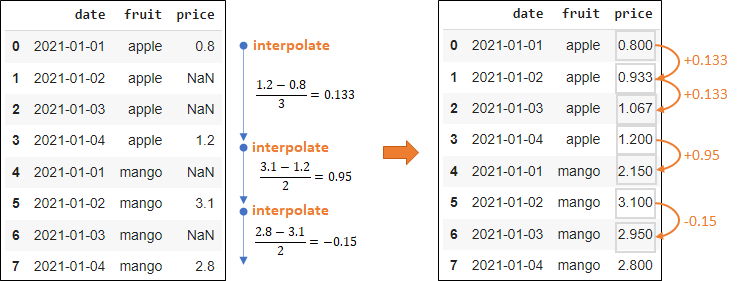df['price'].interpolate(method = 'linear', inplace = True) df['price'] = df.groupby('fruit')['price'].apply(lambda x: x.interpolate(method='linear')) # by group df['price'] = df.groupby('fruit')['price'].apply(lambda x: x.interpolate(method='linear')).bfill() # by group with backwards-fill- Interpolation (e.g. linear)
- May leave NAs/NaNs
- Interpolation by group
- Interpolation + backwards-fill
- Interpolation (e.g. linear)
Apply a conditional: says fill na with mean_price where “weekday” column is TRUE; if FALSE, fill with mean_price*1.25
mean_price = df.groupby('fruit')['price'].transform('mean') df['price'].fillna((mean_price).where(cond = df.weekday, other = mean_price*1.25), inplace = True)
Strings
Misc
- regex is slow
- Stored as “object” type but “StringDtype” is available. This new Dtype is optional for now but it may be required to do so in the future
- Regex with Examples in python and pandas
Filter (see Filter section)
Replace pattern using regex
df['colB'] = df['colB'].str.replace(r'\D', '') df['colB'] = df['colB'].replace(r'\D', r'', regex=True)- “r” indicates you’re using regex
- replaces all non-numeric patterns (e.g. letters, symbols) with an empty string
- Replace pattern with list comprehension (more efficient than loops)
With {{re}}
import re df['colB'] = [re.sub('[^0-9]', '', x) for x in df['colB']]- re is the regular expressions library
- Replaces everything not a number with empty string (carrot inside is a negation)
Split w/list output
>> df["group"].str.split("-") 0 [A, 1B] 1 [B, 1B] 2 [A, 1C] 3 [A, 1B] 4 [C, 1C]- “-” is the delimiter. A-1B –> [A, 1B]
Split into separate columns
df["group1"] = df["group"].str.split("-", expand=True)[0] df["group2"] = df["group"].str.split("-", expand=True)[1]- expand = True splits into separate columns
- BUT you have to manually create the new columns in the old df by assigning each column to a new column name in the old df.
Concatenate string columns
df['all'] = [p1 + ' ' + p2 + ' ' + p3 + ' ' + p4 for p1, p2, p3, p4 in zip(df['a'], df['b'], df['c'], df['d'])]- List comprehension is fastest
- “+” operator also fast
- with a space, ” “, as the delimiter
df['all'] = df['a'] + ' ' + df['b'] + ' ' + df['c'] + ' ' + df['d']- Have read that this is most efficient for larger datasets
df['colE'] = df.colB.str.cat(df.colD)can be used for relatively small datasets (up to 100–150 rows)
Concatenate string and non-string columns
df['colE'] = df['colB'].astype(str) + '-' + df['colD']Extract pattern with list comprehension
import re df['colB'] = [re.search('[0-9]', x)[0] for x in df['colB']]- re is the regular expressions library
- extracts all numeric characters
Extract all instances of pattern into a list
results_ls = re.findall(r'\d+', s)- Finds each number in string, “s,” and outputs into a list
- Can also use
re.finditer - fyi
re.searchonly returns the first match
Extract pattern using regex
df['colB'] = df['colB'].str.extract(r'(\d+)', expand=False).astype("int")- “r” indicates you’re using regex
- extracts all numeric patterns and changes type to integer
Remove pattern by
maploopfrom string import ascii_letters df['colB'] = df['colB'].map(lambda x: x.lstrip('+-').rstrip(ascii_letters))- pluses or minuses are removed from if they are the leading character
lstripremoves leading characters that match characters providedrstripremoves trailing characters that match characters provided
Does a string contain one or more digits
any(c.isdigit() for c in s)
Conversions
Convert dict to pandas df (**slow for large lists**)
df = pd.DataFrame.from_dict(acct_dict, orient="index", columns=["metrics"]) result_df = DataFrame.from_dict(search.cv_results_, orient='columns') print(result_df.columns)- key of the dict is used as the index and value is column named “metrics”
Convert pandas df to ndarray
ndarray = df.to_numpy() # using numpy ndarray = np.asarray(df)Convert df to list or dict
df ColA ColB ColC 0 1 A 4 1 2 B 5 2 3 C 6 result = df.values.tolist() [[1, 'A', 4], [2, 'B', 5], [3, 'C', 6]] df.to_dict() {'ColA': {0: 1, 1: 2, 2: 3}, 'ColB': {0: 'A', 1: 'B', 2: 'C'}, 'ColC': {0: 4, 1: 5, 2: 6}} df.to_dict("list") {'ColA': [1, 2, 3], 'ColB': ['A', 'B', 'C'], 'ColC': [4, 5, 6]} df.to_dict("split") {'index': [0, 1, 2], 'columns': ['ColA', 'ColB', 'ColC'], 'data': [[1, 'A', 4], [2, 'B', 5], [3, 'C', 6]]}Convert string variable to datetime
df.date_of_birth = df.date_of_birth.astype("datetime64[ns]") df['Year'] = pd.to_datetime(df['Year'])Convert all “object” type columns to “category”
for col in X.select_dtypes(include=['object']): X[col] = X[col].astype('category')Convert column to numeric
df['GDP'] = df['GDP'].astype(float)
Sample and Simulate
Simulate
Random normal variable (and group variable named strata)
df1 = pd.DataFrame({'strata': 1, 'y': np.random.normal(loc=10, scale=1, size=size))- 2 columns “strata” (all 1s) and “y”
- loc = mean, scale = sd, size = number of observations to create
Sample
Rows
df.sample(n = 15, replace = True, random_state=2) # with replacement sample_df = df.sample(int(len(tps_df) * 0.2)) # sample 20% of the data- This method is faster than sampling using random indices with NumPy
Rows and columns
tps.sample(5, axis=1).sample(7, axis=0)- 5 columns and 7 rows
Chaining
Need to encapsulate code in parentheses
# to assign to an object new_df = ( melb .query("Distance < 2 & Rooms > 2") # query equals filter in Pandas .filter(["Type", "Price"]) # filter equals select in Pandas .groupby("Type") .agg(["mean", "count"]) # calcs average price and row count for each Type; creates subcolumns mean and count under Price .reset_index() # converts matrix to df .set_axis(["Type", "averagePrice", "numberOfHouses"], # renames Price to averagePrice and count to numberOfHouses axis = 1, inplace = False) .assign(averagePriceRounded = lambda x: x["averagePrice"] # assign equals mutate in Pandas (?) .round(1)) .sort_values(by = ["numberOfHouses"], ascending = False) )- if
agg["mean"]then there wouldn’t be a subcolumn mean, just the values of Price would be the mean
- if
Using
pipeargs
- func: Function to apply to the Series/DataFrame
- args: Positional arguments passed to func
- kwargs: Keyword arguments passed to func
Returns: object, the return type of func
Syntax
def f1(df, arg1): # do something return # a dataframe def f2(df, arg2): # do something return # a dataframe def f3(df, arg3): # do something return # a dataframe df = pd.DataFrame(..) # some dataframe df.pipe(f3, arg3 = arg3).pipe(f2, arg2 = arg2).pipe(f1, arg1 = arg1)- function 3 (f3) is executed then function 2 then function 1
Crosstab
Example
df = pd.DataFrame([["A", "X"], ["B", "Y"], ["C", "X"], ["A", "X"]], columns = ["col1", "col2"]) print(pd.crosstab(df.col1, df.col2)) col2 X Y col1 A 2 0 B 0 1 C 1 0
Pivot Table
Example
print(df) Name Subject Marks 0 John Maths 6 1 Mark Maths 5 2 Peter Maths 3 3 John Science 5 4 Mark Science 8 5 Peter Science 10 6 John English 10 7 Mark English 6 8 Peter English 4 pd.pivot_table(df, index = ["Name"], columns=["Subject"], values='Marks', fill_value=0) Subject English Maths Science Name John 10 6 5 Mark 6 5 8 Peter 4 3 10Example: drop lowest score for each letter grade, then calculate the average score for each letter grade
grades_df.pivot_table(index='name', columns='letter grade', values='score', aggfunc = lambda series : (sorted(list(series))[-1] + sorted(list(series))[-2]) / 2) letter grade A B name Arif 96.5 87.0 Kayla 95.5 84.0- grades_df
- 2 names (“name”)
- 6 scores (“score”)
- Only 2 letter grades associated with these scores (“letter grade”)
- index: each row will be a “name”
- columns: each column will be a “letter grade”
- values: value in the cells will be from the “score” column according to each combination columns in the index and columns args
- aggfunc: uses a lambda to compute the aggregated values
- “series” is used a the variable in the lambda function
- sorts series (ascending), takes the top two values (using negative list indexing), and averages them
- Iterate over a df
- Better to use a vectorized solution if possible
- grades_df
Iteration
iterrows
def salary_iterrows(df): salary_sum = 0 for index, row in df.iterrows(): salary_sum += row['Employee Salary'] return salary_sum/df.shape[0] salary_iterrows(data)iteruples
def salary_itertuples(df): salary_sum = 0 for row in df.itertuples(): salary_sum += row._4 return salary_sum/df.shape[0] salary_itertuples(data)- Faster than iterrows
Time Series
Misc
- Also see
- [A Collection of Must-Know Techniques for Working with Time Series Data in Python](https://towardsdatascience.com/a-collection-of-must-know-techniques-for-working-with-time-series-data-in-python-7c01d199b184)
- Collection of preprocessing recipes
- [{{datetime}}]{style="color: goldenrod"} in bkmksOperations
Load and set index frequency
Example
#Load the PCE and UMCSENT datasets df = pd.read_csv( filepath_or_buffer='UMCSENT_PCE.csv', header=0, index_col=0, infer_datetime_format=True, parse_dates=['DATE'] ) #Set the index frequency to 'Month-Start' df = df.asfreq('MS')- “header=0” is default, says 1st row of file is the column names
- “index_col=0” says use the first column as the df index
- “infer_datetime_format=True” says infer the format of the datetime strings in the columns
- “parse_dates=[‘DATE’]” says convert “DATE” to datetime and format
Create date variable
Example: w/
date_range# DataFrame date_range = pd.date_range('1/2/2022', periods=24, freq='H') sales = np.random.randint(100, 400, size=24) sales_data = pd.DataFrame( sales, index = date_range, columns = ['Sales'] ) # Series rng = pd.date_range("1/1/2012", periods=100, freq="S") ts = pd.Series(np.random.randint(0, 500, len(rng)), index=rng)Methods (article)
- pandas.date_range — Return a fixed frequency DatetimeIndex.
- start: the start date of the date range generated
- end: the end date of the date range generated
- periods: the number of dates generated
- freq: default to “D” (daily), the interval between dates generated, it could be hourly, monthly or yearly
- pandas.bdate_range — Return a fixed frequency DatetimeIndex, with the business day as the default frequency.
- pandas.period_range — Return a fixed frequency PeriodIndex. The day (calendar) is the default frequency.
- pandas.timedelta_range — Return a fixed frequency TimedeltaIndex, with the day as the default frequency.
- pandas.date_range — Return a fixed frequency DatetimeIndex.
Coerce to datetime {#sec-py-pandas-ts-coerce .unnumbered}
Source has month first or day first
# month first # e.g 9/16/2015 --> 2015-09-16 df['joining_date'] = pd.to_datetime(df['joining_date']) # day first # e.g 16/9/2015 --> 2015-09-16 df['joining_date'] = pd.to_datetime(df['joining_date'], dayfirst=True)- default is month first
- * If the first digit is a number that can NOT be a month (e.g. 25), then it will parse it as a day instead. *
Format conditional on source’s delimiter
df['joining_date_clean'] = np.where(df['joining_date'].str.contains('/'), pd.to_datetime(df['joining_date']), pd.to_datetime(df['joining_date'], dayfirst=True) )- Like an ifelse. Source dates that have “/” separating values are parsed as month-first and everything else as day-first
Extract time components
- Create “year-month” column:
df["year_month"] = df["created_at"].dt.to_period("M")- “M” is the “offset alias” string for month
- (Docs)
- Create “year-month” column:
Filter a range
gallipoli_data.loc[ (gallipoli_data.DateTime >= '2008-01-02') & (gallipoli_data.DateTime <= '2008-01-03') ]Fill in gaps
Example: hacky way to do it
pd.DataFrame( sales_data.Sales.resample('h').mean() )- frequency is already hourly (‘h’), so taking the mean doesn’t change the values. But NaNs will be added for datetime values that don’t exist.
.fillna(0)can be added to.mean()if you want to fill the NaNs with something meaningful (e.g. 0)
Explode interval between 2 date columns into a column with all the dates in that interval
Example: 1 row
pd.date_range(calendar["checkin_date"][0], calendar["checkout_date"][0]) # output DatetimeIndex(['2022-06-01', '2022-06-02', '2022-06-03', '2022-06-04', '2022-06-05', '2022-06-06', '2022-06-07'], dtype='datetime64[ns]', freq='D')Example: all rows
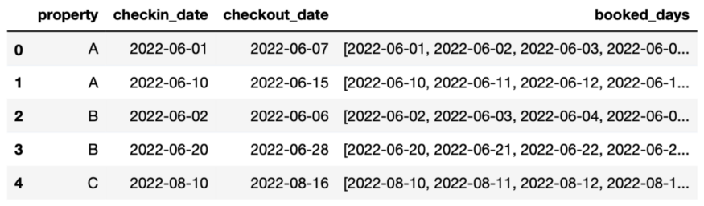calendar.loc[:, "booked_days"] = calendar.apply( lambda x: list( pd.date_range( x.checkin_date, x.checkout_date + pd.DateOffset(days=1) ).date ), axis = 1 )Example: pivot_longer
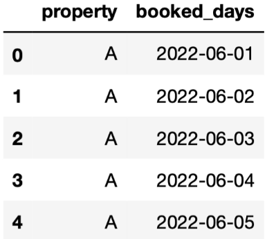# explode calendar = calendar.explode( column="booked_days", ignore_index=True )[["property","booked_days"]] # display the first 5 rows calendar.head()
Calculations
Get the min/max dates of a dataset:
print(df.Date.agg(['min', 'max']))(“Date” is the date variable)Find difference between to date columns
df["days_to_checkin"] = (df["checkin_date"] - df["created_at"]).dt.days- number of days between the check-in date and the date booking was created (i.e. number of days until the customer arrives)
Add 1 day to a subset of observations
df.loc[df["booking_id"]==1001, "checkout_date"] = df.loc[df["booking_id"]==1001, "checkout_date"] + pd.DateOffset(days=1)- adds 1 day to the checkout date of the booking with id 1001
Aggregation
- Misc
resample(docs) requires a datetime type column set as the index for the dataframe:df.index = df[‘DateTime’]- btw this function doesn’t resample in the bootstrapping sense of the word. Just a function that allows you to do window calculations on time series
- Common time strings (docs)
- s for seconds
- t for minutes
- h for hours
- w for weeks
- m for months
- q for quarter
- Rolling-Window
Example: 30-day rolling average
window_mavg_short=30 stock_df['mav_short'] = stock_df['Close'] \ .rolling(window=window_mavg_short) \ .mean()
- Step-Window
Example: Mean temperature every 3 hours
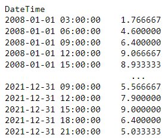gallipoli_data.Temperature.resample(rule = ‘3h’).mean()- “1.766667” is the average from 03:00:00 to 05:00:00
- “4.600000” is the average from 06:00:00 to 08:00:00
- “h” is the time string from hours
- By default the calculation window starts on the left index (see next Example for right index) and doesn’t include the right index
- e.g. index, “09:00:00”, calculation window includes “09:00:00”, “10:00:00”, and “11:00:00”
Example: Max sunshine every 3 hrs
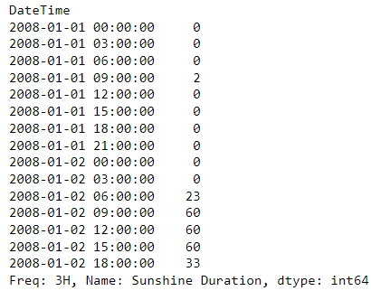gallipoli_data['Sunshine Duration'].resample(rule = '3h', closed= 'right').max()- “closed=‘right’” says include the right index in the calculation but not the left
- e.g. index, “09:00:00”, calculation window includes “10:00:00”, “11:00:00”, and “12:00:00”
- “closed=‘right’” says include the right index in the calculation but not the left
- Misc
Simulation
Example: simulation, gaussian
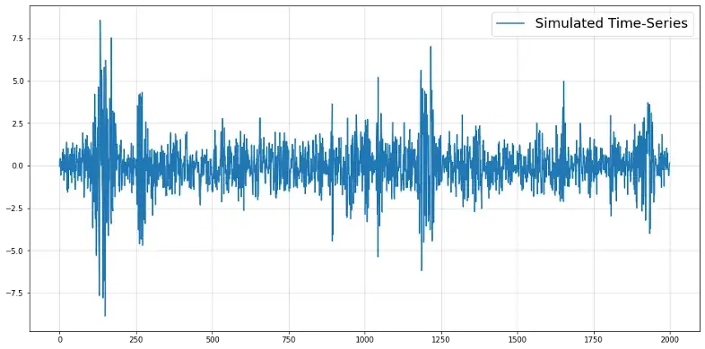import numpy as np import matplotlib.pyplot as plt np.random.seed(987) time_series = [np.random.normal()*0.1, np.random.normal()*0.1] sigs = [0.1, 0.1] for t in range(2000): sig_t = np.sqrt(0.1 + 0.24*time_series[-1]**2 + 0.24*time_series[-2]**2 + 0.24*sigs[-1]**2 + 0.24*sigs[-2]**2) y_t = np.random.normal() * sig_t time_series.append(y_t) sigs.append(sig_t) y = np.array(time_series[2:]) plt.figure(figsize = (16,8)) plt.plot(y, label = "Simulated Time-Series") plt.grid(alpha = 0.5) plt.legend(fontsize = 18)Standard GARCH time-series that’s frequently encountered in econometrics
Example: simulation, beta
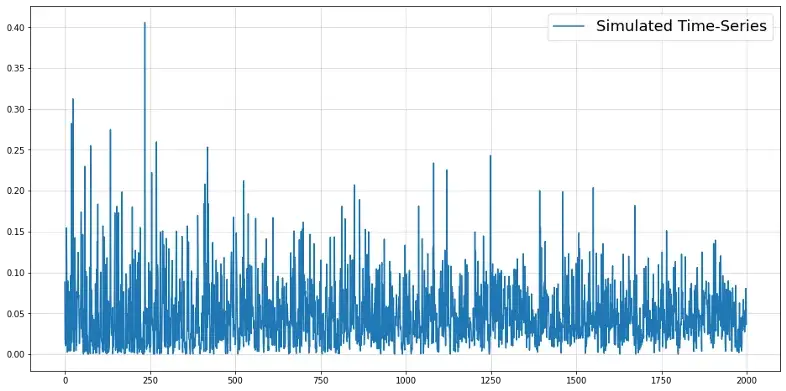from scipy.stats import beta np.random.seed(321) time_series = [beta(0.5,10).rvs()] for t in range(2000): alpha_t = 0.5 + time_series[-1] * 0.025 * t beta_t = alpha_t * 20 y_t = beta(alpha_t, beta_t).rvs() time_series.append(y_t) y = np.array(time_series[1:]) plt.figure(figsize = (16,8)) plt.plot(y, label = "Simulated Time-Series") plt.grid(alpha = 0.5) plt.legend(fontsize = 18)
Optimization
Performance
Pandas will typically outperform numpy ndarrays in cases that involve significantly larger volume of data (say >500K rows)
Bad performance by iteratively creating rows in a dataframe
- Better to iteratively append lists then coerce to a dataframe at the end
- Use
itertuplesinstead ofiterrowsin loops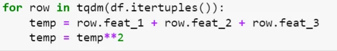- Iterates through the data frame by converting each row of data as a list of tuples. Makes comparatively less number of function calls and hence carry less overhead.
tqdm::tqdmis a progress bar for loops
Libraries
- {{pandarallel}} - A simple and efficient tool to parallelize Pandas operations on all available CPUs.
- {{parallel_pandas}} - A simple and efficient tool to parallelize Pandas operations on all available CPUs.
- {{modin}} - multi-processing package with identical APIs to Pandas, to speed up the Pandas workflow by changing 1 line of code. Modin offers accelerated performance for about 90+% of Pandas API. Modin uses Ray and Dask under the hood for distributed computing.
- {{numba}} - JIT compiler that translates a subset of Python and NumPy code into fast machine code.
works best with functions that involve many native Python loops, a lot of math, and even better, NumPy functions and arrays
Example
@numba.jit def crazy_function(col1, col2, col3): return (col1 ** 3 + col2 ** 2 + col3 * 10) ** 0.5 massive_df["f1001"] = crazy_function( massive_df["f1"].values, massive_df["f56"].values, massive_df["f44"].values ) Wall time: 201 ms- 9GB dataset
- JIT stands for just in time, and it translates pure Python and NumPy code to native machine instructions
Use numpy arrays
dat['col1001'] = some_function( dat['col1'].values, dat['col2'].values, dat['col3'].values )Adding the
.valuesto the column vectors coerces to ndarraysNumPy arrays are faster because they don’t perform additional calls for indexing, data type checking like Pandas Series
evalfor non-mathematical operations (e.g. boolean indexing, comparisons, etc.)Example
massive_df.eval("col1001 = (col1 ** 3 + col2 ** 2 + col3 * 10) ** 0.5", inplace=True)- Used a mathematical operation for his example for some reason
ilocvsloc- iloc faster for filtering rows:
dat.iloc[range(10000)] - loc faster for selecting columns:
dat.loc[:, ["f1", "f2", "f3"]] - noticeable as data size increases
- iloc faster for filtering rows:
Memory Optimization
See memory size of an object
data = pd.read_csv("dummy_dataset.csv") data.info(memory_usage = "deep") data.memory_usage(deep=True) / 1024 ** 2 # displays col sizes in MBs # or for just 1 variable data.Country.memory_usage() # a few columns memory_usage = df.memory_usage(deep=True) / 1024 ** 2 # displays col sizes in MBs memory_usage.head(7) memory_usage.sum() # totalUse inplace transformation (i.e. don’t create new copies of the df) to reduce memory load
df.fillna(0, inplace = True) # instead of df_copy = df.fillna(0)Load only the columns you need from a file
col_list = ["Employee_ID", "First_Name", "Salary", "Rating", "Company"] data = pd.read_csv("dummy_dataset.csv", usecols=col_list)Variable datatypes
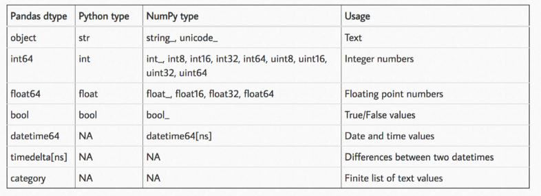Convert variables to smaller types when possible
- Variables always receive largest memory types
- Pandas will always assign
int64as the datatype of the integer-valued column, irrespective of the range of current values in the column.
- Pandas will always assign
- Variables always receive largest memory types
Byte ranges (same bit options for floats)
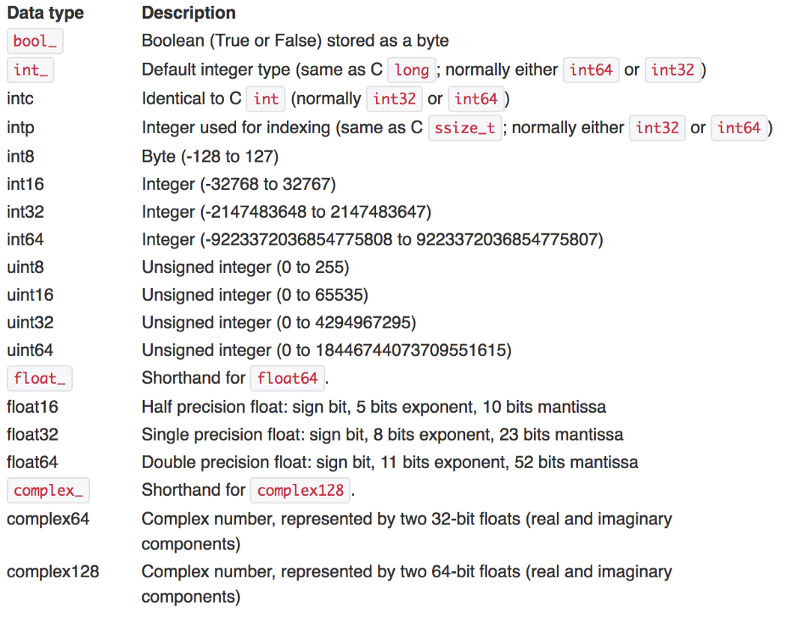uintrefers to unsigned, only positive integersint8: 8-bit-integer that covers integers from [-2⁷, 2⁷].int16: 16-bit-integer that covers integers from [-2¹⁵, 2¹⁵].int32: 32-bit-integer that covers integers from [-2³¹, 2³¹].int64: 64-bit-integer that covers integers from [-2⁶³, 2⁶³].
Convert integer column to smaller type:
data["Employee_ID"] = data.Employee_ID.astype(np.int32)Convert all “object” type columns to “category”
for col in X.select_dtypes(include=['object']): X[col] = X[col].astype('category')- object datatype consumes the most memory. Either use str or category if there are few unique values in the feature
pd.Categoricaldata type can speed things up to 10 times while using LightGBM’s default categorical handler
For
datetimeortimedelta, use the native formats offered in pandas since they enable special manipulation functionsFunction for checking and converting all numerical columns in dataframes to optimal types
def reduce_memory_usage(df, verbose=True): numerics = ["int8", "int16", "int32", "int64", "float16", "float32", "float64"] start_mem = df.memory_usage().sum() / 1024 ** 2 for col in df.columns: col_type = df[col].dtypes if col_type in numerics: c_min = df[col].min() c_max = df[col].max() if str(col_type)[:3] == "int": if c_min > np.iinfo(np.int8).min and c_max < np.iinfo(np.int8).max: df[col] = df[col].astype(np.int8) elif c_min > np.iinfo(np.int16).min and c_max < np.iinfo(np.int16).max: df[col] = df[col].astype(np.int16) elif c_min > np.iinfo(np.int32).min and c_max < np.iinfo(np.int32).max: df[col] = df[col].astype(np.int32) elif c_min > np.iinfo(np.int64).min and c_max < np.iinfo(np.int64).max: df[col] = df[col].astype(np.int64) else: if ( c_min > np.finfo(np.float16).min and c_max < np.finfo(np.float16).max ): df[col] = df[col].astype(np.float16) elif ( c_min > np.finfo(np.float32).min and c_max < np.finfo(np.float32).max ): df[col] = df[col].astype(np.float32) else: df[col] = df[col].astype(np.float64) end_mem = df.memory_usage().sum() / 1024 ** 2 if verbose: print( "Mem. usage decreased to {:.2f} Mb ({:.1f}% reduction)".format( end_mem, 100 * (start_mem - end_mem) / start_mem ) ) return df- Based on the minimum and maximum value of a numeric column and the above table, the function converts it to the smallest subtype possible
Check memory usage before and after conversion
print("Memory usage before changing the datatype:", data.Country.memory_usage()) data["Country"] = data.Country.astype("category") print("Memory usage after changing the datatype:", data.Country.memory_usage())Use sparse types for variables with NaNs
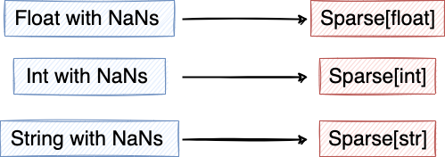- Example:
data["Rating"] = data.Rating.astype("Sparse[float32]")
- Example:
Specify datatype when loading data
col_list = ["Employee_ID", "First_Name", "Salary", "Rating", "Country_Code"] data = pd.read_csv("dummy_dataset.csv", usecols=col_list, dtype = {"Employee_ID":np.int32, "Country_Code":"category"})